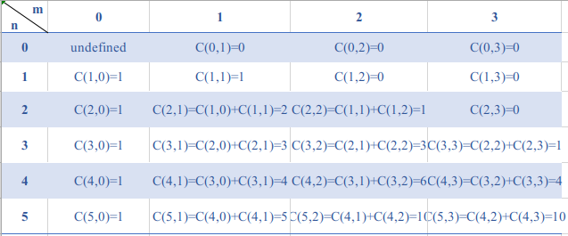
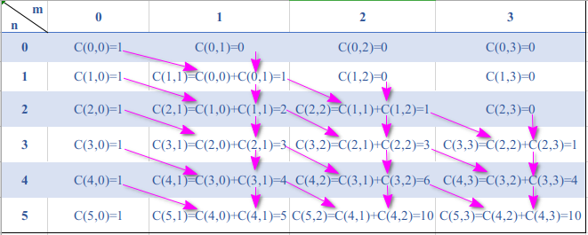
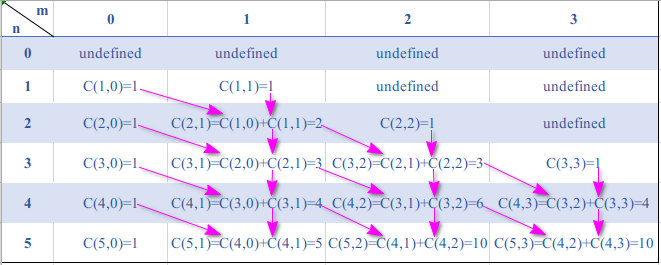
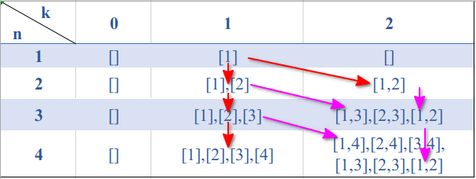

组合数学
组合数学是数学的一个分支, 在计算机领域有着广泛的应用.
排列与组合
排列使用A(Arrangement)或P(Permutation)表示，从 n 个数中取出 m 个数的排列数公式：
全排列是排列数的一种特殊情况：$A(n,n) = n!$
1 | /* |
组合使用C(Combination)表示，从n个数中取出m个数（$n\geq m$）的组合数公式：
上面是组合数的定义式。在实际运算中，由于考虑到分子分母都可能很大存在溢出的的情况，通常使用组合数的递推式。
从 n 个数中取出 m 个数，按照取或不取第 m 个数进行讨论。若取第 m 个数，则说明是从前面 n-1 个数中取出了 m-1 个数，组合数为 $C(n-1,m-1)$；若未取第 m 个数，则说明是从前 n-1 个数中取出了 m 个数，组合数为 $C(n-1, m)$。所以递推式为：
初始条件 $C(1,1) = 1, C(n,0) = 1$,特别的，当 $n < m$ 时 $C(n,m) = 0$ 。
我们以 C(5,3) 为例打表

算法Java描述：1
2
3
4
5
6
7
8
9
10
11
12
13
14
15
16/*
求从 n 个数中取出 m 个数的组合数
要求：n >= m > 0
*/
long combination(int n, int m) {
long[][] dp = new long[n+1][m+1];
for(int i=0; i<=n; ++i) {
dp[i][0] = 1;
}
for(int i=1; i<=m; ++i) {
for(int j=i; j<=n; ++j) {
dp[j][i] = dp[j-1][i-1] + dp[j-1][i];
}
}
return dp[n][m];
}
为了循环求解的遍历，我们将C(0,0)也设置为1，Java和下面C++程序的递推计算如图所示：

算法C++描述：1
2
3
4
5
6
7
8
9
10
11
12
13
14
15
16
17
18typedef long long ll;
/*
求从 n 个数中取出 m 个数的组合数
要求：n >= m > 0
*/
ll combination(int n, int m) {
ll** dp = new ll*[n+1];
for(int i=0; i<=n; ++i) {
dp[i] = new ll[m+1];
dp[i][0] = 1;
}
for(int i=1; i<=m; ++i) {
for(int j=i; j<=n; ++j) {
dp[j][i] = dp[j-1][i-1] + dp[j-1][i];
}
}
return dp[n][m];
}
算法C语言描述：
note:注意由于C语言malloc函数不会在初始化的时候赋初值，所以递推边界返回需要缩小一下，不考虑$n < m$默认为0的情况了。1
2
3
4
5
6
7
8
9
10
11
12
13
14
15
16
17
18
19typedef long long ll;
/*
求从 n 个数中取出 m 个数的组合数
要求：n >= m > 0
*/
ll combination(int n, int m) {
ll** dp = (ll**) malloc( (n+1)*sizeof(ll*) );
for(int i=1; i<=n; ++i) {
dp[i] = (ll *)malloc( (m+1)*sizeof(ll) );
dp[i][0] = 1;
}
for(int i=1; i<=m; ++i) {
dp[i][i] = 1;
for(int j=i+1; j<=n; ++j) {
dp[j][i] = dp[j-1][i-1] + dp[j-1][i];
}
}
return dp[n][m];
}
C语言程序打表如图所示：
例题：计蒜客 T1984 求组合数
关于上述特殊情况，即从n个数中取0个数的情况为1的解释，来源于二项式定理
二项式定理
二项式定理阐明了幂函数展开式的系数是组合数：
如
由此可知 C(3,0) = 1。
当问题由求组合数变为打印出所有可能的组合时，动态规划算法在时间空间复杂度方面就没有优势了。
例题：Leetcode 77
我们来分析一下，动态规划算法消耗了 O(n×k×C(n,k)) 的空间，计算需要 O(n*k) 的复杂度：

暴力递归回溯算法参见另一篇博客文章
Catalan 数
卡特兰数(Catalan number)又称卡塔兰数, 是组合数学中常出现的一个数列. 卡特兰数满足如下递推关系:
在数据结构中, 当 n 个元素以某种顺序进栈, 并且可在任意时刻出栈时, 所获得的元素排列的数目 N 恰好满足卡特兰数的计算, 即:
基础数论
三个同余公式：
Mobius 反演定理
除法表达式 NYOJ 1013
除法不像乘法，既没有交换律，也没有结合律。连除的规律是一个数连续除以多个数可以看做这个数除以后面所有数的乘积，即
想让表达式为整数，无非就是使得分子能约掉分母中的所有因子。为了能达到我们的目的，分母中因子应该越少越好。经过分析，可以构造一个式子，使得所有的数里面，除了第二个数，其余的都可以作为分子。构造的式子如下：
这个式子是否为整数，是所给除法表达式是否能构造出整数结果的充分必要条件。所以接下来要做的事情，就是判断这个表达式的值是否为整数。我们没有必要计算出表达式的值，那样既麻烦，而且可能会出现数值越界的情况。
一种方法是利用唯一分解定理，将$X_2$写成若干素数相乘的形式：
将 $X_1X_3\cdots X_k$ 也写成若干素数相乘的形式：
若对于 $X_2$ 分解式中的每一个 $p_i^{\alpha_j}$，在 $X_1X_3\cdots X_k$ 的分解式中都能找到 $p_i^{\beta_j}$，使得 $\beta_j > \alpha_j$，则式子为整数，否则不为整数。但是要注意到，这道题数字的范围在1到100000000(10^8)之间。既然需要分解成素数相乘的形式，那就需要构造素数表，根据素数定理, 素数表的大小是$\pi (x) ~ \frac{x}{ln x}$, $\frac{10^8}{8\times ln 10}=5428681$，所需内存约为$4\times5\times10^6$B = 20MB, 满足内存要求。但是打表的过程要进行 10^8 次运算,会超时.